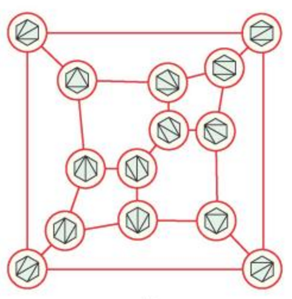
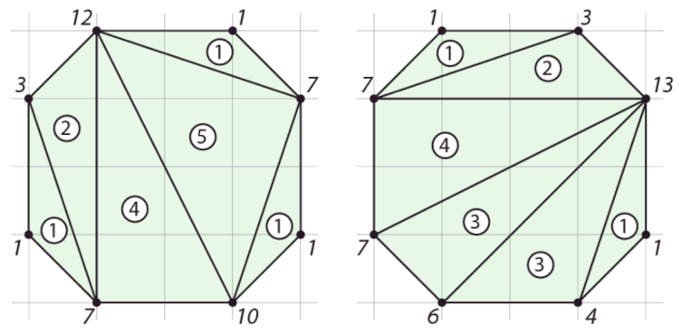

For any point set S, we can define the flip graph of S as a graph whose nodes are the set of triangulations of S, and whose edges represent triangulations which differ by a single flip. In particular, for a convex hexagon, the flip graph has the following structure:
The flip graph of any convex polygon is in fact the 1-skeleton of a particular class of polytope called an associahedron. The vertices of this associahedron represent triangulations of the original polygon, and the edges represent flip connections.
Additionally, we can define an area vector for a triangulation T of a point set with n vertices as a vector of n values, where the ith value is the sum of the areas of the triangles adjacent to the ith point. The computation of the area vectors for two particular triangulations are shown below.
In the 1990s, Gelfand, Kapranov, and Zelevinsky showed that the associahedron is a secondary polytope. In particular, this means that the convex hull of the area vectors for each triangulation of a convex polygon is equivalent to the associahedron for that polygon.
Our application displays a convex hexagon on the left, and the associahedron it corresponds to on the right. Features to try:
Hope you enjoy!
Made for Math 198o at HMC, based on suggestion by Professor Satyan Devadoss. Images from Discrete and Computational Geometry, by Satyan Devadoss and Joseph O'Rourke.